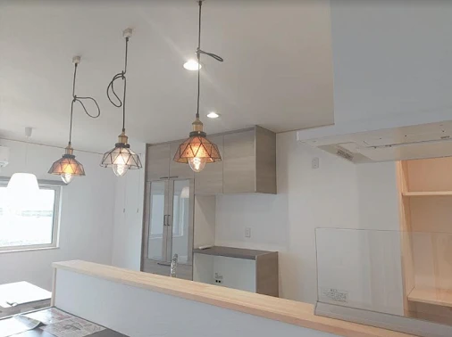
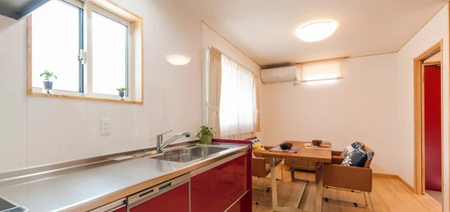
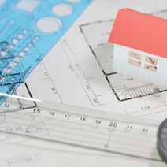

子どものアレルギーと室内空気
こんにちは。富山で自然素材にこだわるホンモノの家、フジ創アイノスです。 子どもたちを悩ませる、アレルギー症状、ぜんそく、アトピー性皮膚炎などの原因の多くは、室内の空気に含まれる化学物質です。 部屋の壁紙がビニールクロスだ
続きを読む →FUJISOU AINOS JOURNAL
家づくりのこと、暮らしのこと。
日々の想いを、お伝えします。
新しい記事から 18・40ページ
こんにちは。富山で自然素材にこだわるホンモノの家、フジ創アイノスです。 子どもたちを悩ませる、アレルギー症状、ぜんそく、アトピー性皮膚炎などの原因の多くは、室内の空気に含まれる化学物質です。 部屋の壁紙がビニールクロスだ
続きを読む →
こんにちは。富山で自然素材にこだわるホンモノの家、フジ創アイノスです。 今日は急に雨と風が強くなり寒かったですね。 冷えは万病のもとです。暖かくして過ごしてください。 暖かい家の大切さ 冬になれば床が凍るように冷たくなり
続きを読む →こんにちは。富山で自然素材にこだわるホンモノの家、フジ創アイノスです。 早いものでもう12月、冬本番が迫っていますね。 冬は一年中でもっとも結露が発生しやすい季節です。 急に温度が下がり、空気中の水蒸気が水になるのが結露
続きを読む →
こんにちは。富山で自然素材にこだわるホンモノの家、フジ創アイノスです。 フジ創アイノスでは、住む人の健康を第一に考え、自然素材をにこだわった家づくりをしています。 しかし、一般的に、『自然素材の家』は価格が高くなってしま
続きを読む →
こんにちは。富山で自然素材にこだわるホンモノの家、フジ創アイノスです。 先日の完成見学会に、今年の春にアイノスの家を建てたお客様も見に来てくださいました。 住宅会社をフジ創アイノスに決めたポイントを伺いました。 Y様「ア
続きを読む →
こんにちは。富山で自然素材にこだわるホンモノの家、フジ創アイノスです。 １１月２７・２８日の二日間、お客様に完成したお家をお借りして、見学会を開催しました。 自然素材のナチュラルでかわいいお家をご紹介します。 まずこちら
続きを読む →こんにちは。富山で自然素材にこだわるホンモノの家、フジ創アイノスです。 フジ創アイノスは「身体に悪影響を及ぼす建築材料を使わない自然素材の家」をコンセプトに家づくりを行っています。 素材は健康に良い天然素材のみ ずっと健
続きを読む →
こんにちは。富山で自然素材にこだわるホンモノの家、フジ創アイノスです。 南に家があり、敷地の半分近くが日陰になってしまう約55坪の土地に、使いやすく明るく開放的な家を建てるには、日陰を避けて建てるという考え方から改善する
続きを読む →こんにちは。富山で自然素材にこだわるホンモノの家、フジ創アイノスです。 例えば、家を建てる土地が、東が道路に接している間口11m×奥行き16.5mの55坪の土地で、その南に2階建の家が建っており、そのせいで敷地の半分ぐら
続きを読む →
こんにちは。富山で自然素材にこだわるホンモノの家、フジ創アイノスです。 ✔︎無駄を省きながら平屋を建てる 下の図のような、１００坪の建築地で、1800万円という予算の中で平屋を建てる場合、どのような間取りにしたかをお話し
続きを読む →こんにちは。富山で自然素材にこだわるホンモノの家、フジ創アイノスです。 土地の広さが100坪あっても、多くの方がそんな広大な敷地にポツンと2階建の家を建てています。 その理由は「平屋は高い」と思い込んでしまっているからだ
続きを読む →
こんにちは。富山で自然素材にこだわるホンモノの家、フジ創アイノスです。 大きな家は、広々として気持ちがよく、スペースが多いのでインテリアを楽しめる、といった魅力があります。 コンパクトな家にも、メリットはたくさんあります
続きを読む →
こんにちは。富山で自然素材にこだわるホンモノの家、フジ創アイノスです。 家の価格を抑えるためには、出来るだけ家をコンパクトにすることが重要なポイントとなります。 とはいえいざマイホームを建てるとなると、たくさんの希望が出
続きを読む →
こんにちは。富山で自然素材にこだわるホンモノの家、フジ創アイノスです。 ✔これからの家づくりの考え方 これから日本が迎える社会は、少子化であり超高齢化社会です。 その影響を受け、今後は、社会保険料・税金アップによる可処分
続きを読む →
こんにちは。富山で自然素材にこだわるホンモノの家、フジ創アイノスです。 ▼コンパクトなのに明るくて開放的でゆったりしている秘密 こんなにコンパクトなお家なのに、明るく開放的でゆったりしているように感じるのは、このお家が
続きを読む →こんにちは。富山で自然素材にこだわるホンモノの家、フジ創アイノスです。 "床面積23坪弱の家"と聞くと、とても小さくて狭い家を想像してしまうかもしれません。 家族4人がその広さのお家で暮らすとなれば、なおのこと「そんな広
続きを読む →
こんにちは。富山で自然素材にこだわるホンモノの家、フジ創アイノスです。 ✔スポット的にかかる費用 家を美しく保ち、かつ長持ちさせるためには、定期的にメンテナンスをしなければいけません。 外部塗装をする場合、足場も含めると
続きを読む →こんにちは。富山で自然素材にこだわるホンモノの家、フジ創アイノスです。 家づくりの予算を考える時、最初にかかる土地費用や建築費用、庭の費用といったイニシャルコストばかりに目が行きがちですが、同時に、今後ずっとかかり続ける
続きを読む →
こんにちは。富山で自然素材にこだわるホンモノの家、フジ創アイノスです。 SNS上で、「家づくりで後悔している点は？」というアンケートがありました。 一番多かったのは、「窓」でした。 「ここに作った窓がいらなかった」、「思
続きを読む →
こんにちは。富山で自然素材にこだわるホンモノの家、フジ創アイノスです。 北側接道で奥行きが浅く、かつ南に隣接して家が建っている日当たりが悪い土地で家を建てる場合、光の採り込み方に工夫が必要です。 南にリビングを配置し大き
続きを読む →こんにちは。富山で自然素材にこだわるホンモノの家、フジ創アイノスです。 例えば、以下の2つの選択肢があった場合、あなたはどちらを選ばれますか？ 1つは、親が所有している土地があり、そこに家を建てれば土地代は必要なくなるが
続きを読む →
こんにちは。富山で自然素材にこだわるホンモノの家、フジ創アイノスです。 多くの新婚カップルは、最初は賃貸に住み、いずれ頭金を貯めてからマイホームを購入しようと考えます。 ですが、家賃を払いながら頭金を十分に貯めるのは、な
続きを読む →
こんにちは。富山で自然素材にこだわるホンモノの家、フジ創アイノスです。 今日の日中は暑かったですね。 富山県はいま乾燥してきている時期です。体調管理に気をつけてくださいね。 人が快適に感じる湿度は40～60％といわれてい
続きを読む →
こんにちは。富山で自然素材にこだわるホンモノの家、フジ創アイノスです。 賃貸に住んでいると、一生にいくら家賃を払うのでしょうか。 30歳の人が85歳まで毎月家賃を払うと考えると「残り55年間」払い続けなければなりません。
続きを読む →